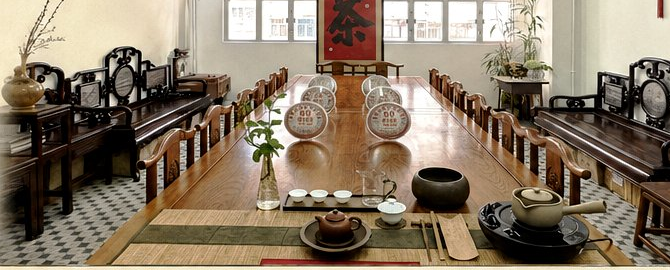

港九茶葉行商會
Hong Kong & Kowloon Tea Trade Merchants Association
EST. 1948
Hong Kong & Kowloon Tea Trade Merchants Association
EST. 1948

港九茶葉行商會成立於 1948 年，是香港歷史上首個茶行業商會，會員涵蓋眾多著名茶葉商號及老字號企業。本會的核心宗旨，是向世界推廣中國茶文化。
2025 年 8 月
第 16 屆香港國際茶展於 2025 年 8 月 14 至 16 日在香港會議展覽中心舉行。本會為茶展協辦方，第二次參展並設立獨立展館，匯集香港虎標、林奇苑茶行、華山茶業、嶺南茶葉公司、顏奇香茶莊等多家會員企業，推廣傳統茶工藝與港倉茶文化。
來源：香港新聞網 2025 年 8 月報道
會址：香港德輔道西 196 號 3 樓 A 座
電話：(852) 2547 3306
官網：www.hkkttma.org